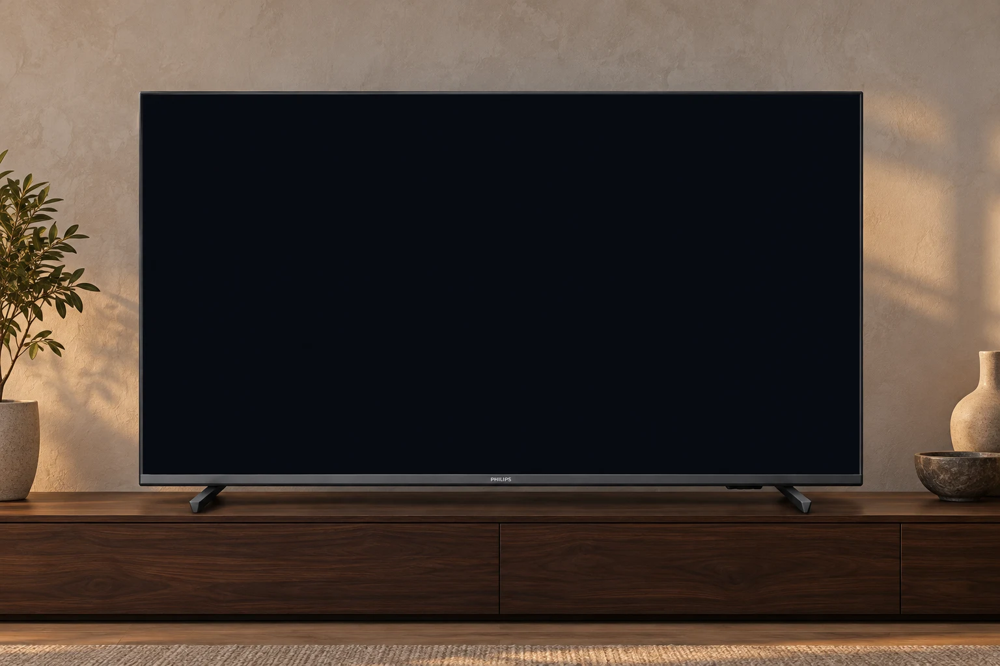

TV’ne kendi
özel launcher’ını kur.
Netflix’in, YouTube’un, oyun konsolun. Hepsi sana ait, sade bir ana ekranda. Android TV’ni reklamlardan arındır; kumandanı eline al, keyfine bak.
Android 11 ve üzeri · Açık kaynak · Alpha

Merhaba
Netflix
Uygulamalar 5
Girişler
Ana ekran biraz nefes alsın.
Kurulu TV uygulamaların kendi afişleriyle gelir. Seçtiğin uygulamanın rengi ana ekrana yayılır. HDMI’daki PlayStation’ın ve anten yayının hemen aşağıdadır.
Selamlamanı ve hava durumunu kendine göre ayarla. Bu oda önizlemesinde uygulama seçtikçe duvar ışığı da değişir. Gerçek TV’de Ambilight düğmesi Philips’in ayar panelini açar; launcher duvar ışığını doğrudan yönetmez.
Bu TV’de AirPlay yoktu.
Onu da ekledik.
Philips 65PUS7906/62’nin içinde AirPlay alıcısı yok. Ayrı bir açık kaynak alıcı kurarak iPhone ve Mac ekranını TV’ye yansıtabiliyorsun. Launcher, gerçek yansıtma başlayınca alıcıyı açıyor; bitince seni ana ekrana geri getiriyor.
iPhone / Mac AirPlay alıcısı TV
Bu isteğe bağlı bir ek kurulum. Alıcı launcher’a dahil değil; otomatik geçiş için ADB üzerinden ek izinler gerekiyor. Ayrıntılar kurulum rehberinde.
AirPlay kurulumunu açAdım adım, TV’ne.
Bilgisayarın ve TV’n aynı yerel ağda olsun. Kaynak dosyaları bilgisayarda tutacağız; TV’ye yalnızca APK kurulacak.
-
TV’nin modelini ve Android sürümünü kontrol et.
Ayarlar → Sistem / Cihaz tercihleri → Hakkında. Android 11 veya üzeri gerekiyor. Özgün uygulama Philips 65PUS7906/62’de kullanıldı; diğer modeller henüz doğrulanmadı.
-
Projeyi indir, bilgisayarında bir klasöre aç.
Kaynak ZIP’i Masaüstü’ndeki tv-kurulum klasörüne çıkar. README.md ve gradlew dosyalarının bulunduğu proje kökünü Codex’e veya Claude Code’a aç. Bütün klasörü TV’ye kopyalama.
Proje dosyalarını indir ↓ -
Bağlantı ve derleme araçlarını hazırla.
Google Platform-Tools ZIP’ini tv-kurulum içine aç. İçindeki platform-tools klasöründe adb bulunmalı. Kaynaktan derlemek için Android Studio, JDK 17 ve Android SDK 34 gerekiyor. Aşağıdaki prompt bu adımlarda sana yol gösterecek.
Google Platform-Tools -
TV’de hata ayıklamayı aç ve bağlantıyı onayla.
Hakkında → Derleme satırına yedi kez bas. Geliştirici seçeneklerinden ağ / USB hata ayıklamayı aç. TV’nin IP adresiyle ADB bağlantısı kurulunca ekrandaki bilgisayar iznini onayla. Menü ve bağlantı yöntemi modele göre değişebilir.
-
Prompt’u gönder, APK’yı kur ve önce dene.
Codex veya Claude Code kaynak koddan APK derleyebilir; varsa imzalı release’i kullanabilir. Kumandayla gezinmeyi, uygulamaları ve girişleri dene. Çalıştığını gördükten sonra Home tuşunda Makallete TV Launcher’ı seç. Mevcut ana ekranını kaldırma.
APK sürümleri ve yayın notları -
Kendi ana ekranını tamamla.
Düzenle düğmesinden istersen adını ve şehrini ekle. AirPlay ayrı bir alıcı ve ek izinlerle kuruluyor; temel launcher için zorunlu değil. İşin bitince ADB’yi ayır ve hata ayıklamayı kapat.
Kurulum için hazır prompt
İndirdiğin proje klasörünü Codex’e veya Claude Code’a aç. Sonra bu prompt’u gönder; bilgisayardaki işleri yapsın, TV’deki adımları sana anlatsın.
Kurulmadan önce bil.
TV’mle çalışır mı?
Android 11 ve üzeri gerekiyor. İlk cihaz Philips 65PUS7906/62 idi; bu paylaşım sürümünün farklı TV’lerde çalışması doğrulanmadı. HDMI, anten, varsayılan ana ekran seçimi ve Ambilight üreticiye bağlı. Uygulama arayüzü şu an Türkçe; bu site ve rehberler iki dilli.
AirPlay nasıl çalışıyor?
Bu Philips modelinde yerleşik AirPlay alıcısı yok. iPhone ve Mac’ten yansıtma için io.github.jqssun.airplay ayrıca kuruluyor; alıcı launcher’a dahil değil. Otomatik geçiş için ADB ile kayıt okuma, kullanım erişimi ve ekran üstüne çizme izinleri gerekiyor. Bekçi alıcının log satırlarını izlediği için yeni alıcı sürümlerinde bozulabilir. İstemiyorsan bu özelliği kapalı bırak.
Hangi bilgiler paylaşılır?
Selamlama ve şehir ayarı yalnızca TV’de saklanır. Şehir araması ve hava koordinatları Open-Meteo’ya gider. Hız testi elle başlatılır, Cloudflare’a bağlanır ve yaklaşık 25 MB indirebilir. Geliştiriciye veri gönderen bir sunucu veya analiz aracı yok. Site önizlemesi gerçek kişisel veri kullanmaz.
Eski ana ekranıma dönebilir miyim?
Evet. Kurulumda eski Home bileşenini kaydet ve sistem launcher’ını koru. Varsayılan uygulamalar menüsünden ya da rehberdeki ADB komutuyla geri dönebilirsin. Launcher’ı kaldırmak yerel ayarlarını siler. Farklı imzalı APK’lar birbirinin üstüne kurulamaz; çalışan kurulumu otomatik kaldırma.
Açık kaynak, kendi TV’ne göre değiştir.
Launcher ve site için MIT lisansı önerildi ve pakete eklendi. Fontların OFL lisansları korunuyor. Ayrı AirPlay alıcısının kendi GPL-3.0 lisansı var. Kodda uygulama sırasını ve gizlenen sistem paketlerini düzenleyebilirsin; bunların henüz ayar ekranı yok.